Baxter Uno Dialysis
Product • UX Research • Content Design
Baxter: Uno Peritoneal Dialysis Machine
X
X
The Challenge
X

X
Goals & Questions
We wanted to bring a sense
- Increasing user confidence in MFA method selection
- Bettering user understanding of MFA methods
- Decreasing user time to making a selection
The research questions we'd like to answer:
- How well do users understand the different MFA methods?
- Do users feel confident in their MFA selections?
- Do icons help users make a quicker decision?
- How does selecting by device first instead of method affect confidence, understanding, and time to making a decision?
Methodology
The team conducted unmoderated usability testing to learn more about how end users select MFA methods. The test was performed through UserTesting.com. Participants independently walked through a series of tasks and questions as they navigated 2 interactive prototypes.
The team conducted 12 usability tests in 2 groups using two prototypes that showed both design versions just in different arrangements in order to diminish the recency/primacy bias.
Ultra discreet cycler hides physical connectors and lines for a cleaner, calmer appearance.
UNO Cycler
Ultra discreet cycler hides physical connectors and lines for a cleaner, calmer appearance.
Separate line channels organize connectors for tidy setup and breakdown. Direct signposting between lines and GUI simplifies instructions for bag setup.
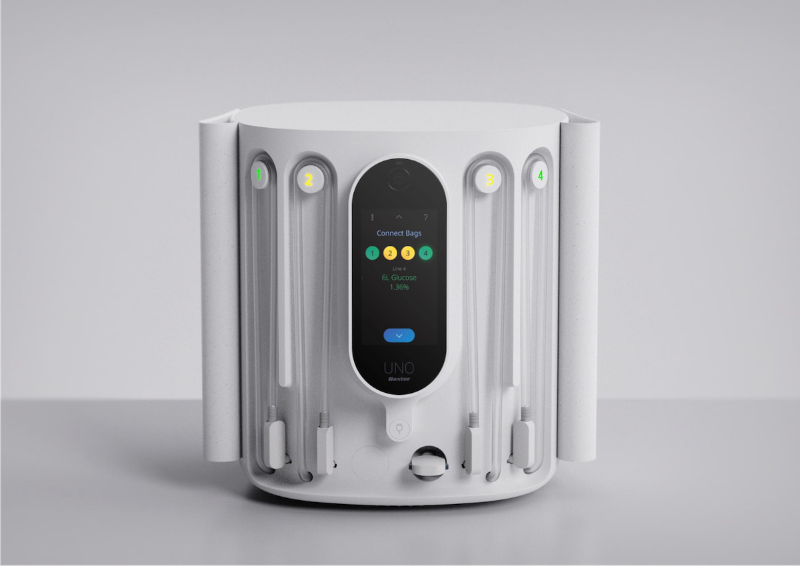Line cleats glow sequentially to guide beginner patients step-by-step through line connections.
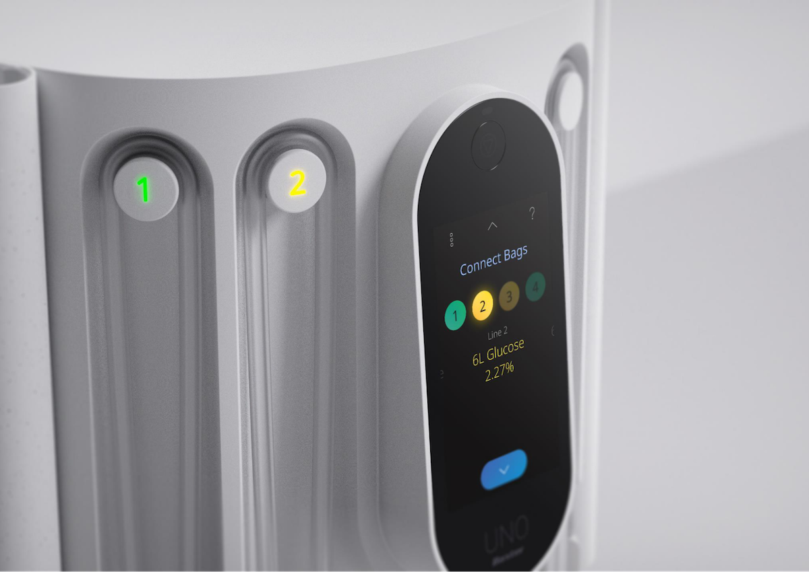The patient connector protrudes for easy retrieval from its docked position. A central, proud retract button offers clear visibility and access for patients.
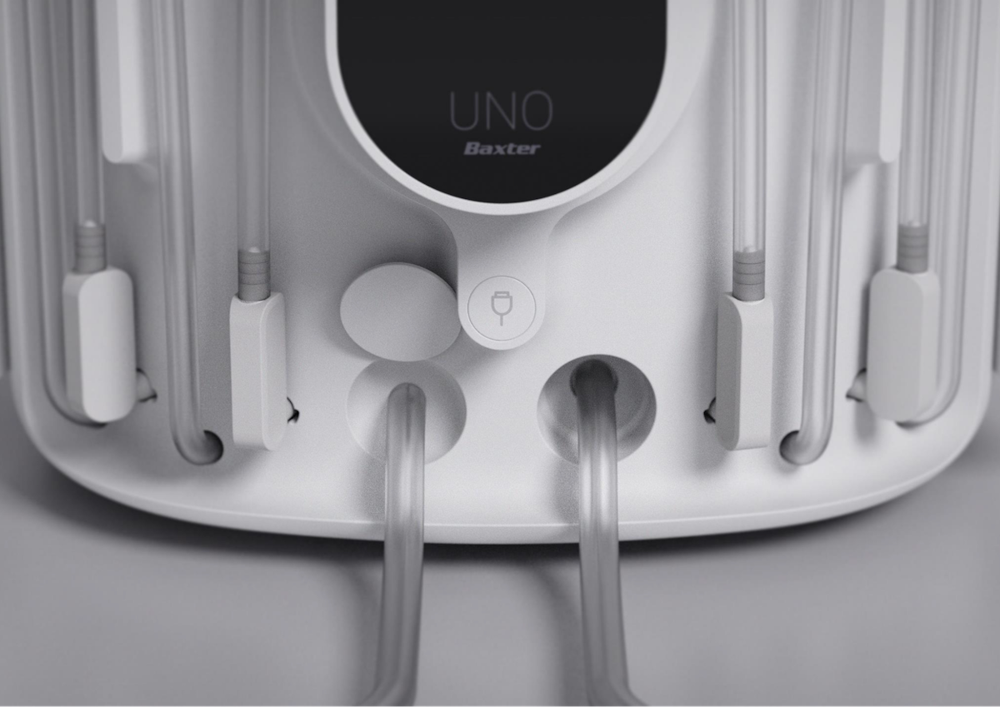The cycler and accessories take up minimal space and keep the staging area organized. Right-angle connectors extend line reach and are easily attachable.
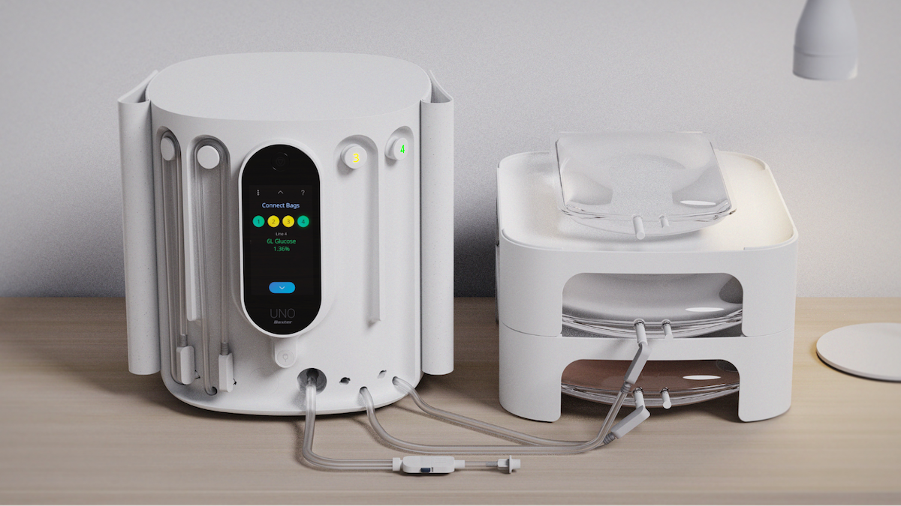Doors hide physical connectors and lines for a cleaner, calmer appearance.
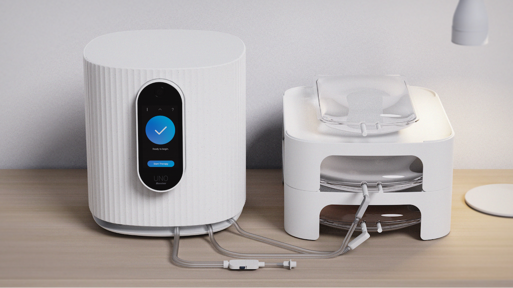Dark background UI prevents screen light from flooding patients’ rooms.
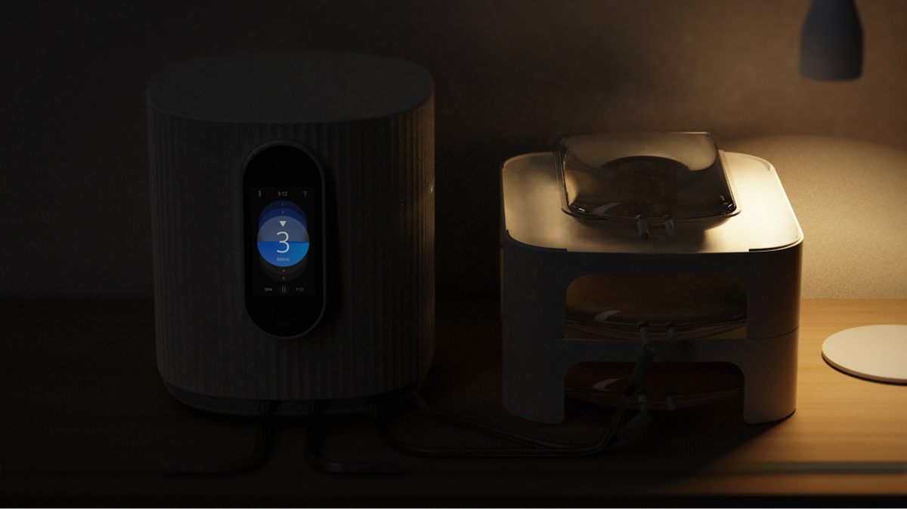Remote priming ensures that patients can complete therapy on-time the following day.
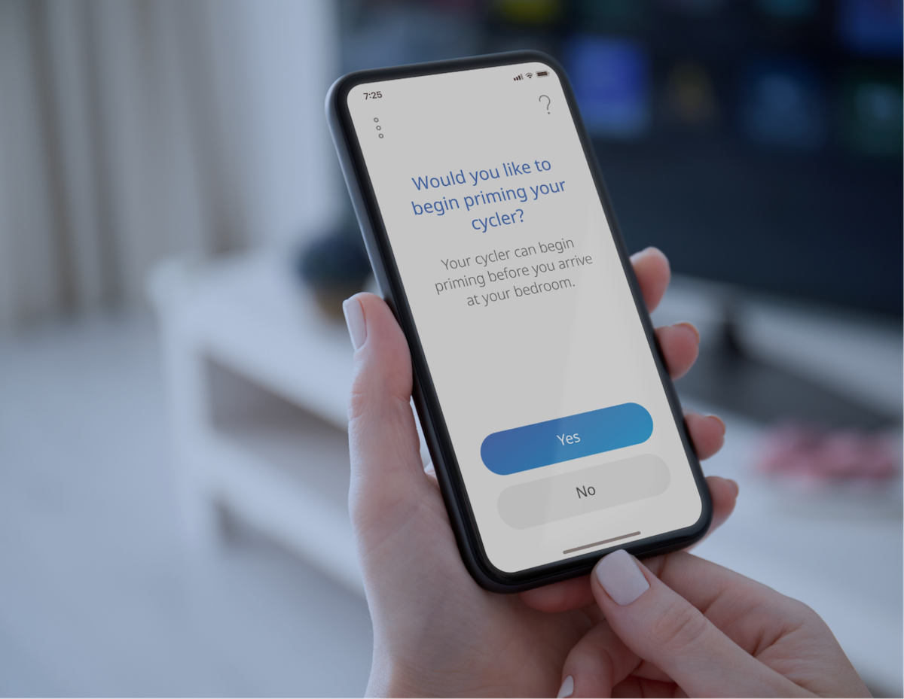Reviewing therapy progress from a mobile device eliminates the need to leave bed.
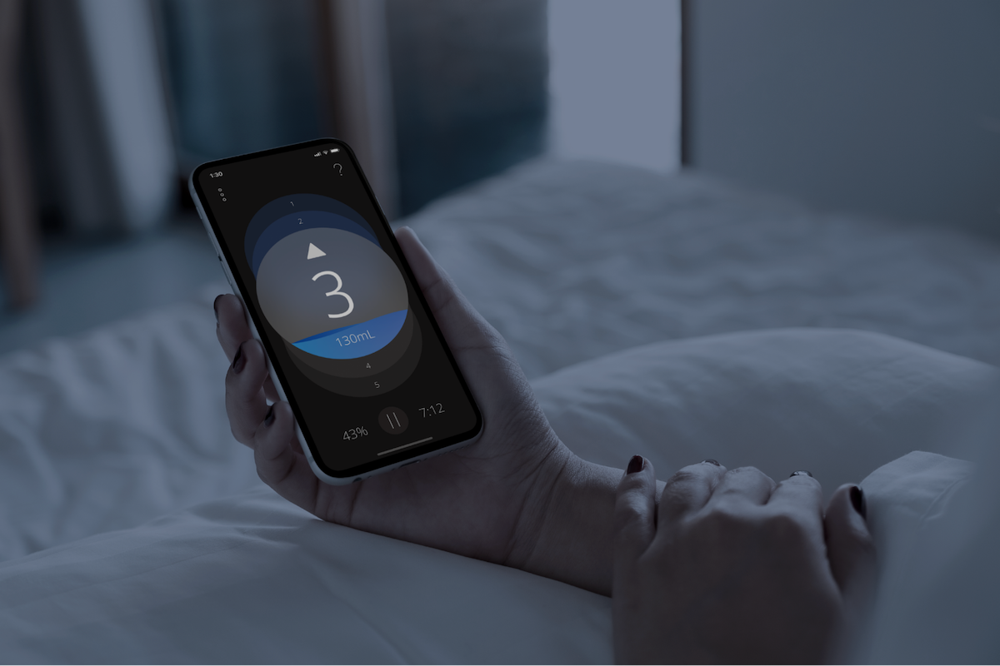View and resolve alarms and notifications from bed. Remotely stop or pause therapy if the issue isn’t fixable during the night. Alarm color and shape are glanceable and communicate alarm urgency from a distance.
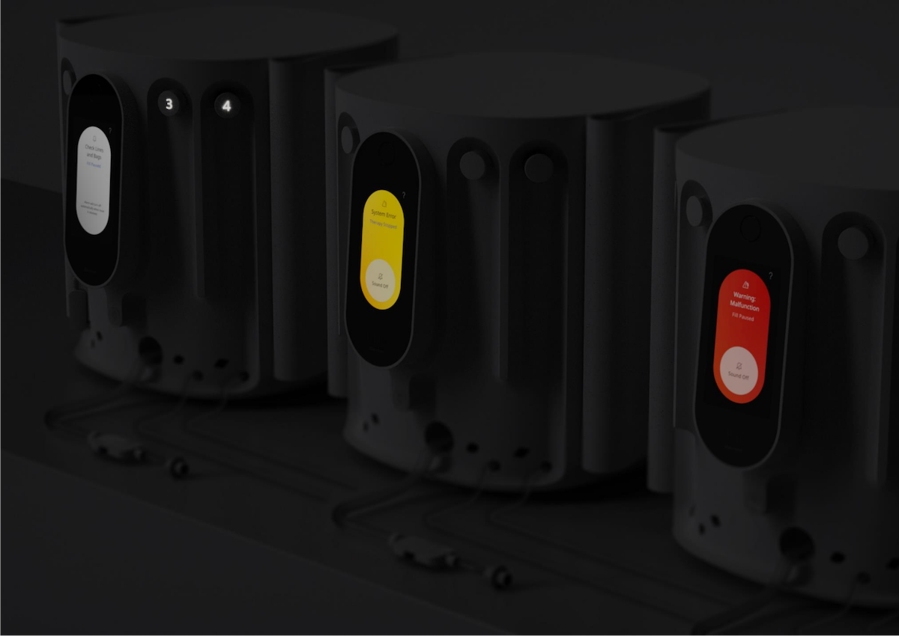Warm white light signals the locations of suspected areas of clogging. Patients can inspect lines without turning room lights on.
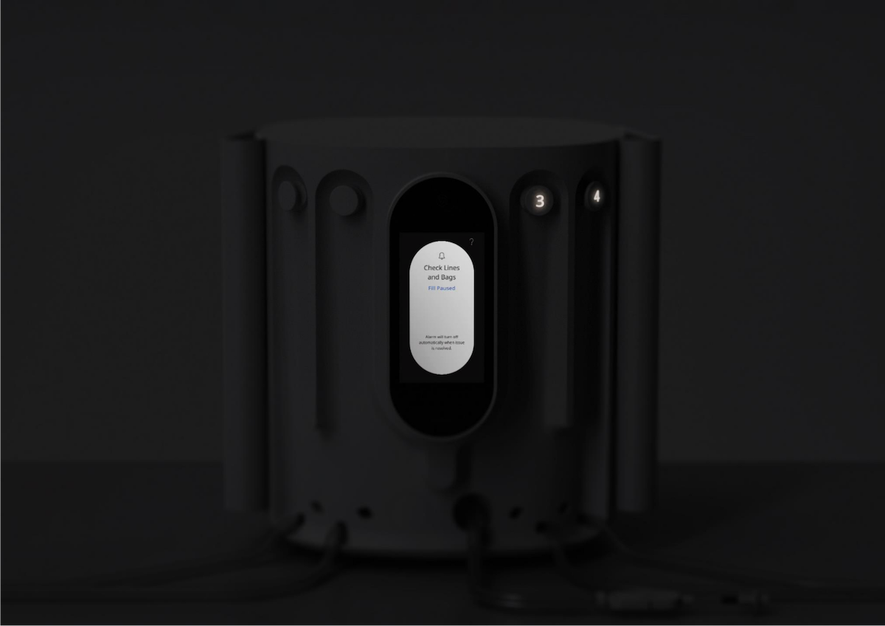UNO UX Model
Treatment Setup & Therapy are the main flow to which all of the UNO GUI is built around.
All navigation and cycler features return patients Treatment Setup & Therapy when secondary tasks are completed.
XXX.
XXX.
XXX.
XXX.
XXX.
XXX.
Research Results
All users were able to successfully select an MFA method and comprehend how it secured their Login.gov account.
4 of 6 users from Group B had positive comments on the Illustration layout.- “It's very detailed giving you information so you are making an informed decision before you select.”
- "This page is providing more descriptive info as to what each icon represents. It's explaining what they are and how it works."
- "You're actually explaining this to me now because I didn't know what a few of these were."
Cycler Comparison. Discreet during use and idle mode with a smaller footprint, fewer disposable parts, and a familiar UI which allows for quick and easy learning.
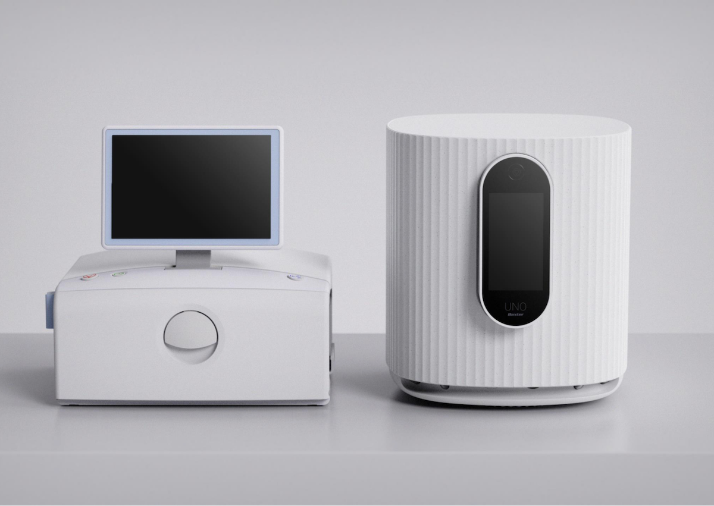Outcomes & Impacts
Following implementation the illustration-based authentication selection page led to an increase in Login.gov account creation success rates.
From January to February 2022: 83.7% account creation success rate. In March 2022: 92.8% success rate [after launch of redesigned MFA setup page]
"Based on this evidence I say that our efforts to streamline the MFA setup page had a positive impact on our users’ experience with Login. The visual design with icons and shorter descriptions helps make the process easier and apparently users are less inclined to give up.” - Doran Steele, Product Manager
© Mostyn Griffith 2021